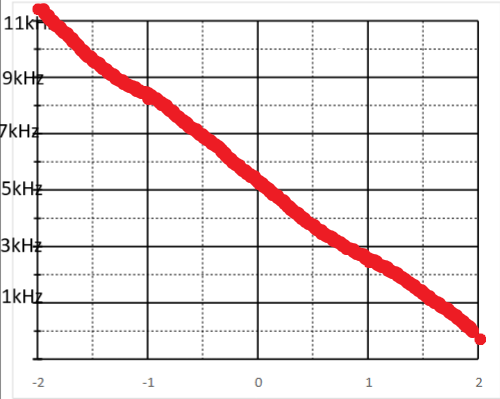
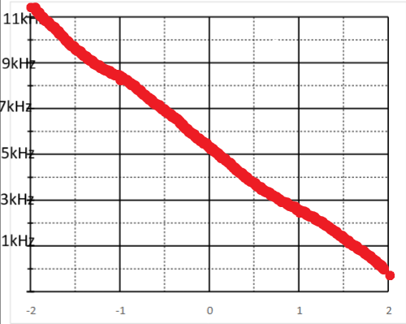
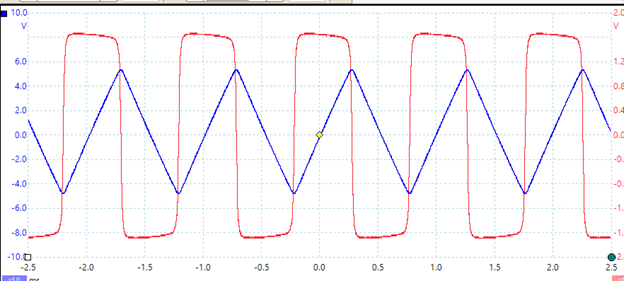

Lab Report - Lab 6: System Linearity TIMS
Introduction
The goal of this lab was to show the properties of linearity by using the TIMS unit to make a variety of signal input and outputs. We used a variety of modules to accomplish the transformation of the signals.
Procedures
A.1 Comparator
Steps A.1 1-4 were to test the lienarity of the comparator module by
using an input wave and looking at it's output as the amplifier was
increased. Below are the results of the test in a graph form.
This system is not linear because as the input Voltage increased the
output of the comparator stayed aroudn the same value.
A.2 Rectifier
The steps for A.2 1-2 were to once again test the linearity of a
module. This time we were to test the rectifier module by using an
input wave and seeing the change of the output as the input increased.
Below are the results of the test in a graph form.The rectifier is
shown as the blue line and the red line is the previous test
comparator.
The result for the rectifier module would lead me to believe that the
system is a linear one as when the input increased the output
increased the same amount.
A.3 Multiplier
The steps for A.3 1-2 were to test the linearity of the multiplier by
testing the property of additivity. Below arr the results of the test
in a table and those table values in a graph.
These results show that the system is not linear as the output starts
increasing out of step with the input increase. The results do show
the half angle formula described because as soon as the input gets to
3 the outputs are skewed and are then shown to be non-linear.
B.1 DC Control
Steps B.1 1-6 were to set up the picoscope to display a DC output that
was controlled by an input sinusoidal wave. Additonally we were to
test the linearity of the system as we increased the output voltage
from -2V to 2V. Below is a table showing the results of the test and a
graph to visually represent the table
 
This system is linear as when the DC controlled voltage was increased
the frequency was inversely decreased which is still a linear
relationship.

This system is linear as when the DC controlled voltage was increased
the frequency was inversely decreased which is still a linear
relationship.
B.2 Frequency Control
An obvious application of a system that has a modulating frequency
output would be a radio since controlling the input modifies the
frequency of the output wave. This could work chanigng stations at
varying frequencies.
C.1 The Integrator
Steps C.1 1-6 show how the integrator module works. The integrator
displays the in picoscope as an input wave that is a saw tooth wave.
The output of the system shows the integral of this function as a
square wave which is the expected result.Below is the result from
picoscope

C.2 Feeback System
Step C.2 of the lab was to demonstrate how a feedback wave works when
looked at up close. The feeback wave takes time to get to the actual
output that is desired when it is triggered. This time can be measured
by mutliplying the peak of the pulse when it triggers by e^-1 and
calculating the time it takes to reach that value. The time it took
for my simulation was around 66 microseconds.
Conclusion
What did you enjoy about this lab?
I enjoyed using more complex modules to integrate and multiply waves
together.
What didn’t go well in this lab?
It took me a while to figure out what the goal of step C.2 was and how
to measure that time.
How would you improve the lab experiment for future classes?
I would improve the instructions. It would be helpful to mention the
order that the picoscope and arb software shoudl be opened in as this
caused me some issues.